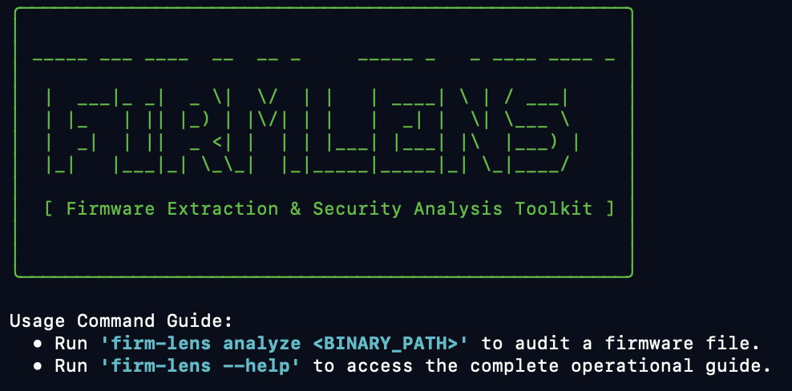

Project: FirmLens
An Industrial-Grade Embedded IoT Firmware Security Analysis Engine Built From Scratch.


The Technical Gap Addressed
Firmware validation tooling has historically been heavily fragmented. Security personnel face compromises between semantic-poor static scanners or massive full-system virtualization configurations with heavy execution costs. Neither approach natively aligns with microcontrollers like the ESP32 architecture.
FirmLens bridges this operational runtime division. It encapsulates firmware images as unified, highly queryable structures—blending static verification patterns, automated physical interaction mapping, and live hardware vulnerability context layers.
Engine Technical Pillars
- Semantic Firmware Parsing: Direct memory map and partition boundary reconstruction (NVS layouts) without hardware virtualization constraints.
- Hardware-in-the-Loop Fuzzing: Automated generation of interface validation matrices running against dynamic physical targets via UART serialization.
- Live Fault Isolation Engine: Live capture of low-level hardware exceptions (Guru Meditation Errors) from interactive terminal channels with translation directly to CWE profiles.
- Regulatory Framework Maps: Compliance matrix generators targeting standardized verification standards including NIST SP 800-213 and ETSI EN 303 645.

Full-Spectrum Penetration Testing & Assessment Matrix
Industrial assessment competencies backed by deep code validation and systems-level verification pipelines.
Web & API Penetration Testing
Systematic hunting for logic flaws, injection surfaces, access control bypasses, and complex microservices configurations matching OWASP Top 10 and ASVS guidelines.
Network Architecture Audit
Mapping boundary exposures, perimeter defense integrity, protocols analysis, internal lateral movement paths, and active directory infrastructure hardening.
iOS & Android Application Pen Testing
Dynamic and static runtime testing of application structures. Includes memory tampering, bypass verification, cryptographic flaws, and secure element storage auditing.
Secure Code Review
Detailed review of codebases from scratch to flag deep structural flaws, race conditions, memory management errors, and cryptographic vulnerabilities before they shift to main production.
Threat Modeling & Architecture Review
Evaluating enterprise cloud-native system blueprints to intercept systemic trust boundary problems, structural design bugs, and compliance configuration drift early.
Embedded & IoT Systems Defenses
Advanced analysis of low-level hardware communication busses (UART, SPI, I2C), flash extraction processes, custom bootloader configurations, and dynamic protocol reverse engineering.
Production Deployments & Case Studies
Validating defensive infrastructure design through enterprise-grade commercial engineering execution.
Swaradiant IT Consulting Production Build
Designed, engineered, and deployed a completely decoupled, high-availability serverless web presence and microservices API ecosystem for a fast-growing IT consulting enterprise. Structured the entire application lifecycle around zero-trust computing paradigms on Amazon Web Services (AWS).
- Serverless Core Security
- IAM Least-Privilege
- Edge Perimeter Protection
- Hardened Mail Relays
Academic Research Attribution Index
Enabling standardized, reproducible scientific citation support across open-source hardware security publications.
@software{FirmLens,
author = {Rudrarapu, Srikanth},
title = {FirmLens: Industrial-Grade Embedded IoT Firmware Security Analysis Engine},
year = {2026},
version = {1.0.2},
url = {https://github.com/Srikanth-Rudrarapu/firm-lens}
}
If you use FirmLens in research, publications, technical reports, or security assessments, please cite it using the metadata matrix schema above for accurate scientific attribution.